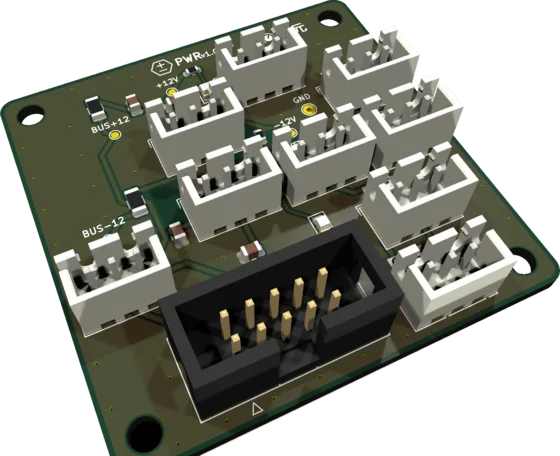
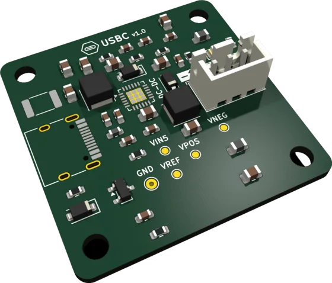
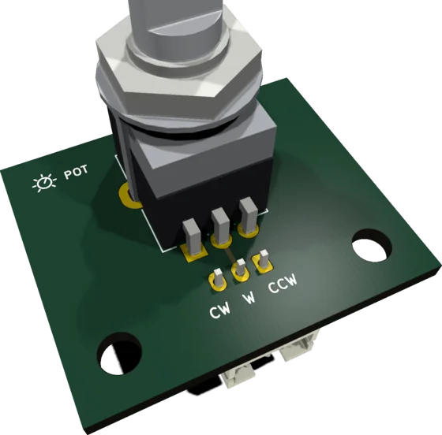
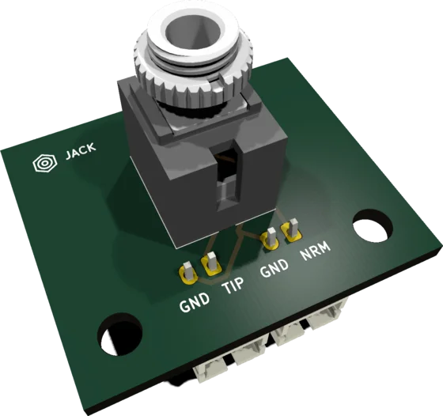
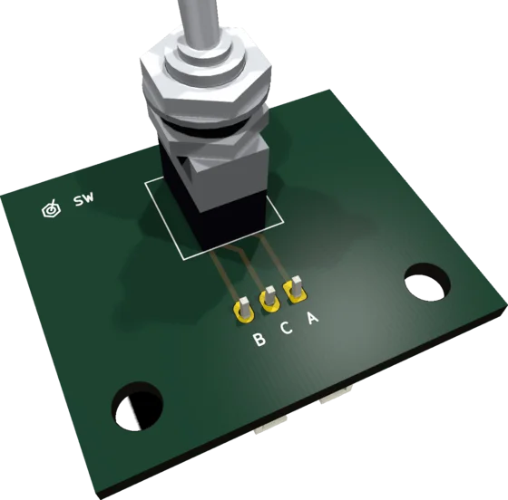
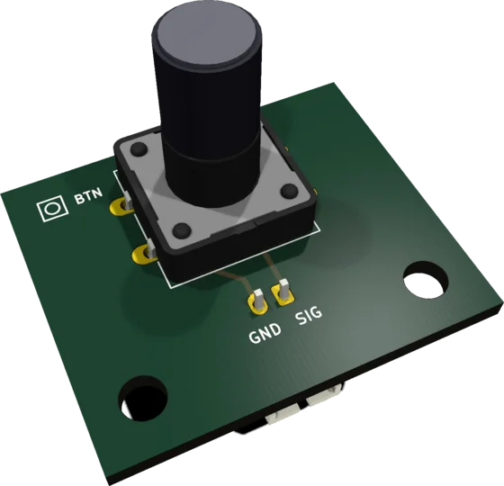
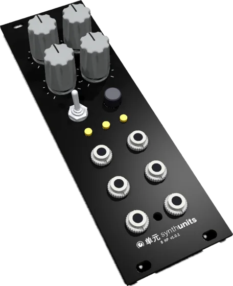

PWR
Takes a Eurorack 10-pin ribbon and gives eight keyed 3-pin leads to the modules, with a resettable fuse and an LED on each rail.
In the first test order, being placedWhat every setup needs: a power board that turns one Eurorack ribbon into eight module leads, a USB-C supply for small setups, a breakout board for each kind of panel part, and the universal front panel.

Takes a Eurorack 10-pin ribbon and gives eight keyed 3-pin leads to the modules, with a resettable fuse and an LED on each rail.
In the first test order, being placed
Makes ±12 V from a USB-C charger's 5 V for a few modules on a desk, feeding the power hub.
In design: parts placed, not routed yet
A small board for one Alpha 9 mm pot with a JST PH connector on its back, so the pot is wired with a lead instead of bare wires.
In the first test order, being placed
A small board for one Thonkiconn mono jack, with JST PH connectors on its back for the tip and, if needed, the normal contact.
In the first test order, being placed
A small board for one Dailywell sub-mini toggle, on-on or on-off-on, with a 3-pin JST PH connector on its back.
In the first test order, being placed
A small board for one 12 mm tactile switch whose own round button comes through the panel, with a 2-pin JST PH connector on its back.
In the first test order, being placed
An 8 HP Eurorack panel with a hole for every place on the minimodules' shared layout, to fit any of them.
In the first test order, being placedThe pot and jack breakouts also exist as V-scored panels of 24, one kind of breakout per panel, to order once the single boards are proven. The panels were drawn for the first, narrower breakouts: at today's 30 × 25 mm, twelve fit on the same panel, so I'll redraw them before ordering.